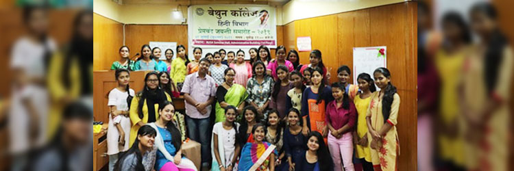

Department of Hindi
हिन्दी हमारे राष्ट्र की अभिव्यक्ति का सरलतम स्त्रोत है।
Hindi is the simplest source of the expression of our Nation.
---Sumitranandan Pant
|  |
About the Department
The Department of Hindi inaugurated its journey in the celebrated educational tradition of Bethune college way back in the year 2001. At the primary stages of the departmental journey Hindi was taught as a compulsory language. In 2014, the department was empowered with honours by the Department of higher education, government of West Bengal. In this year Hindi honours started with merely 5 students. In the later years, the number of students increased and now department of Hindi is a full-fledged department. From beginning, the department maintains a healthy balance between teacher student relation and always enhance the students for the participation of various competitions in college campus and outside the college. The positive ambiance for the students- teacher interaction, counseling and aggradations of qualitative effects is seen in the department on regular basis. This itself helps in building a healthy infrastructure in the department. The aggradations of students' qualities resulted in different blooming in the field of culture, competition, music, recitation, drama along with other after academic achievements.
Faculty
| Dr. Ranjana Sharma Associate Professor and HOD M.A.,B.Ed.Ph.D. |
Dr. Abhijit Bhattacharyya Assistant Professor M.A.,Ph.D. |
Dr. Namita Jaiswal Associate Professor M.A., B.Ed., Ph.D. |
Infrastructure